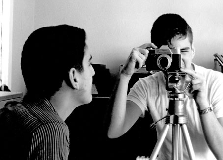
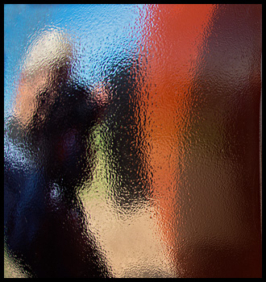

About Bernard |
||||||||
| Home | ||||||||
|  |  | |||||||
|
Bernard M. Waxman retired in 2006 as a faculty member in Computer Science at Southern Illinois University Edwardsville and most recently as the Acting Dean of the School of Engineering. Before taking a position in 1989 at SIUE, Bernard was a co-owner of a professional color photography laboratory.
Bernard has been interested in Photography since his early teens. His first “real” camera was a Retina Reflex, which he shared with his younger brother. The photograph above shows him taking a photo of his brother with the Retina. The two of them used a small basement bathroom for their black and white darkroom. In the mid seventies, he and his brother opened a commercial color processing laboratory. Later he went back to school to complete a doctoral degree in computer science, and took a position in the Department of Computer Science at SIUE. During the past six years he has been working with digital imaging creating a body of work that is focused on scenic and macro photography. Bernard uses several digital cameras with a variety of Nikon lenses. He does his own printing and framing. Prints are made with a large format archival inkjet printer using pigment inks. Museum boards, which are 100% acid-free rag, are used for mats that are backed by acid-free foam core. Bernard continues to be amazed at the quality of digital images. With his background in computer science, he is particularly interested in some of the technical issues related to digital imaging. Also, having worked in total darkness when doing traditional color printing, he now enjoys working with the lights on. Digital manipulation allows him to perform all of the traditional image enhancement with much more precision than is possible in the traditional darkroom. Now that he has the time to explore his passion for photography, he spends many delightful hours exploring the natural world around him. He is interested in all types of photography, but has a special fondness for the very small and the very large. He especially enjoys sharing his photographic vision and creations with others, and is pleased when someone decides to display his photographs in their home or in their office. bmw@photosbybmw.com photosbybmw.com |
||||||||